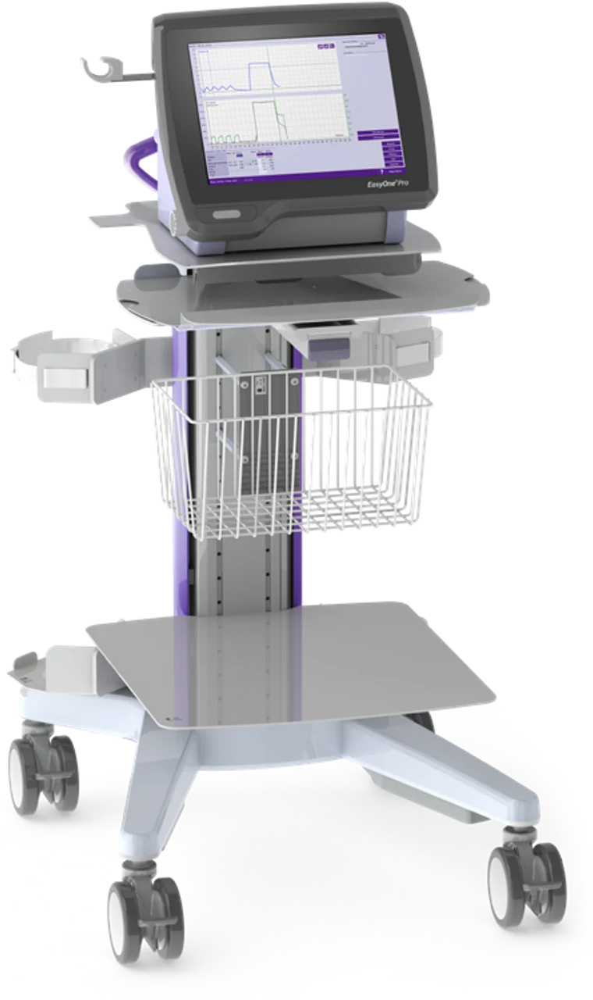

Why Ultrasonic Mobile Testing?
For decades, measuring absolute lung volumes—specifically Total Lung Capacity (TLC) and Residual Volume (RV)—required enclosing patients inside a rigid, claustrophobic 600-pound glass body box. While clinically accurate, these legacy units are prohibitively expensive, immobile, and logistically impossible for independent primary care offices.
The ndd EasyOne Pro LAB replaces the physical cabin with patented TrueFlow™ ultrasonic technology and automated TrueCheck™ gas analysis, capturing true physiological lung volumes through multiple-breath nitrogen washout in a completely open, calibration-free environment.

FDA 510(k) Cleared & ATS/ERS Validated
The EasyOne Pro LAB is fully FDA 510(k) cleared. Extensive peer-reviewed clinical validation studies have proven that the device's ultrasonic TrueFlow™ technology and multi-breath nitrogen washout yield Total Lung Capacity (TLC) and Residual Volume (RV) data that is statistically equivalent to traditional hospital body boxes, while remaining completely compliant with ATS/ERS standardization.
The Diagnostic Paradigm Shift
Why rural practices are abandoning the hospital referral model.
Traditional Body Box
- ✕ 600+ lbs: Requires dedicated, permanent hospital room space.
- ✕ Claustrophobia Risk: Patient is sealed inside a rigid glass cabin.
- ✕ 45-60 Minutes: Lengthy testing times decrease patient throughput.
- ✕ Calibration Drift: Mechanical turbines and differential sensors require daily, complex multi-point manual calibration.
ndd EasyOne Pro LAB
- ✓ 18 lbs (Desktop): Wheels directly into your existing clinic exam room.
- ✓ Zero Claustrophobia: Patient sits comfortably in a standard exam chair (wheelchair accessible).
- ✓ Under 20 Minutes: Complete PFT suite executed rapidly, saving clinic time.
- ✓ Calibration-Free Transit: TrueFlow™ ultrasound requires no daily mechanical calibration and prevents transit drift.
The "Anti-Claustrophobia" Experience
Traditional plethysmography requires sealing patients—often elderly individuals who are already struggling to breathe—inside a locked, airtight glass cabin. This frequently triggers severe claustrophobia, panic, and elevated heart rates, leading to aborted tests and skewed respiratory data.
The ndd EasyOne Pro LAB completely eliminates this barrier. It operates as a fully open-air, tabletop system. Patients sit comfortably in your standard exam chair, or remain in their own wheelchair, breathing naturally without the confinement of glass walls. The result is zero test-induced anxiety, higher patient compliance, and pristine diagnostic data.
The Three Pillars of Testing
Fully compliant with American Thoracic Society (ATS) and European Respiratory Society (ERS) standardization.
TLC, FRC, and RV
Measures thoracic gas volume and absolute lung capacities using automated Multiple-Breath Nitrogen Washout. Delivers highly precise absolute lung capacities without claustrophobic body boxes.
Pre/Post Bronchodilator
Precise measurement of FVC, FEV1, FEV1/FVC ratios, and forced expiratory flow parameters utilizing calibration-free TrueFlow™ ultrasound with automated ATS quality-control feedback.
Single-Breath Capacity
Quantifies the lungs' ability to transfer gas from alveolar air into pulmonary capillary blood supply. Features TrueCheck™ internal validation for instant, zero-warm-up accuracy.
Experience the Technology Firsthand
Let us bring the EasyOne Pro LAB to your clinic for a live demonstration.
Request a Practice Demo